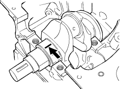

Main Bearing Clearance Inspection (with plastigage)
- Clean the cylinder block, the journal bearing fitting surface, the bearing caps and the bearings.
- Install the bearings to the cylinder block.
- Carefully place the crankshaft on the bearings.
- Rotate the crankshaft about 30° to seat the bearings.
- Place the Plastigage (arrow) over the crankshaft journal across the full width of the bearing.

- Install the bearing caps with the bearing.

- Tighten the bearing caps to the specified torque.
NOTE: Do not allow the crankshaft to turn during bearing cap installation and tightening.
Tightening torque:
88 Nm (9.0 kgf/m, 65.1 lbf/ft)
- Remove the bearing cap.
- Compare the width of the Plastigage attached to either the crankshaft or the bearing against the scale printed on the Plastigage container.
Main bearing-to-journal oil clearance:
Standard (New):
0.030 – 0.058 mm
(0.0012 – 0.0023 in.)
Service limit:
0.08 mm (0.003 in.)